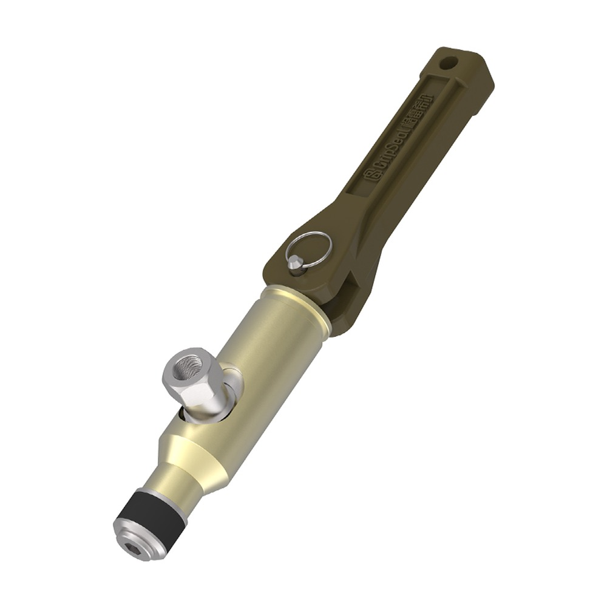
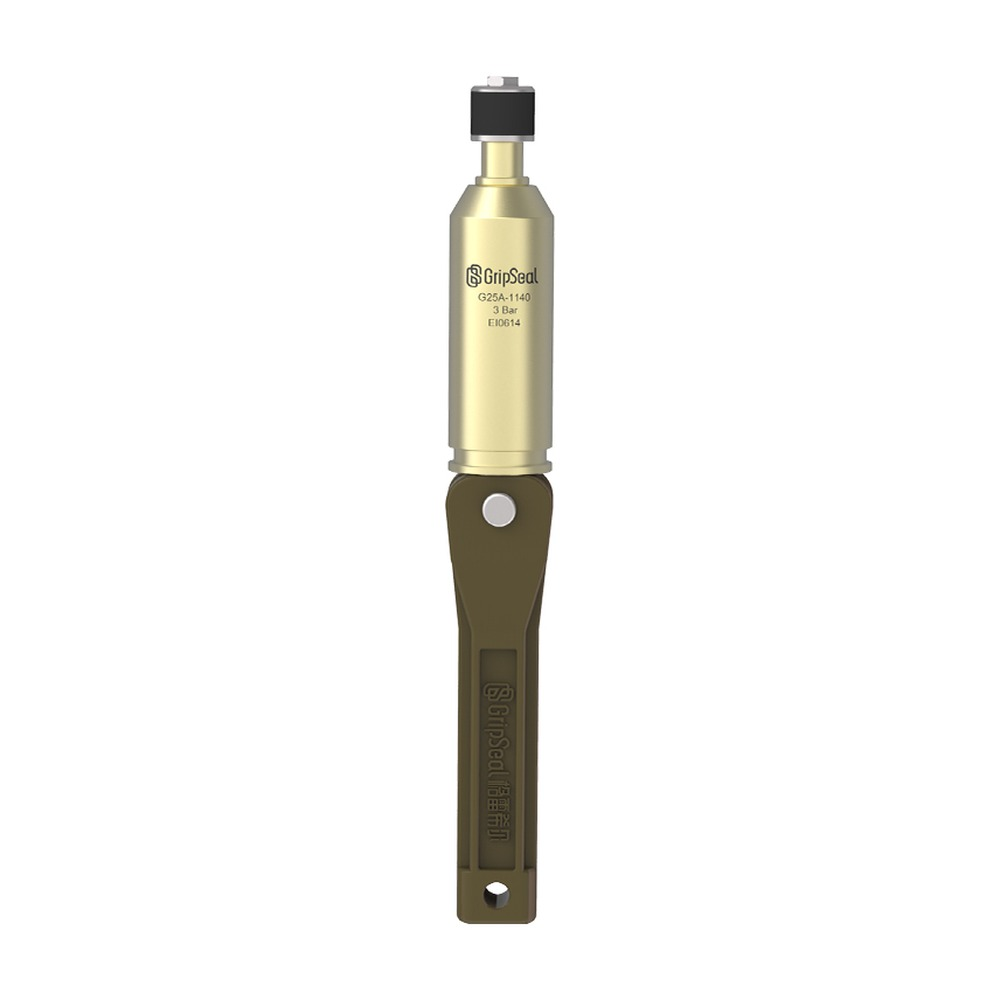

Model overview
Series details: low-pressure internal expansion sealing
G25A is an internal-expansion (pressure-assisted) quick seal connector: inserted into the bore, jaws expand inward to grip the wall while a face seal closes. This series only seals and does not clamp; the simple structure and easy operation make it a low-cost, easily replaced solution for volume leak testing.
At a Glance
Get G25A Selection SupportTypical uses
For low-pressure leak test stations needing fast connection, repeated sealing and stable takt.